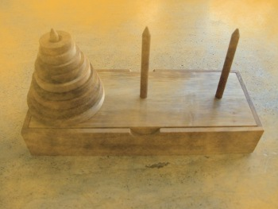
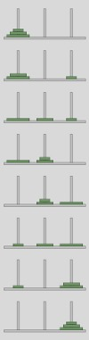
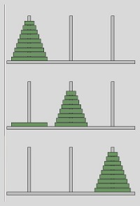

Next Chapter: Mastermind / Bulls and Cows
Towers of Hanoi
Introduction
Why do we present a Python implementation of the "Towers of Hanoi"? The hello-world of recursion is the Factorial. This means, you will hardly find any book or tutorial about programming languages which doesn't deal with the first and introductory example about recursive functions. Another one is the calculation of the n-th Fibonacci number. Both are well suited for a tutorial because of their simplicity but they can be easily written in an iterative way as well.If you have problems in understanding recursion, we recommend, that you go through the chapter "Recursive Functions" of our tutorial.
That's different with the "Towers of Hanoi". A recursive solution almost forces itself on the programmer, while the iterative solution of the game is hard to find and to grasp. So, with the Towers of Hanoi we present a recursive Python program, which is hard to program in an iterative way.
Origin

There is an old legend about a temple or monastery, which contains three poles. One of them filled with
64 gold disks. The disks are of different sizes, and they are put on top of each other, according to
their size, i.e. each disk on the pole a little smaller than the one beneath it. The priests, if the legend is
about a temple, or the monks, if it is about a monastery, have to
move this stack from one of the three poles to another one. But one rule has to be applied: a large
disk can never be placed on top of a smaller one. When they would have finished their work,
the legend tells, the temple would crumble into dust, and the world would end.
But don't be afraid, it's not very likely, that they will finish their work soon, because
264 - 1 moves are necessary, i.e. 18,446,744,073,709,551,615 to move the tower according
to the rules.
But there is - most probably - no ancient legend. The legend and the game "towers of Hanoi" had been
conceived by the French mathematician Edouard Lucas in 1883.
Rules of the Game
The rules of the game are very simple, but the solution is not so obvious. The game "Towers of Hanoi" uses three rods. A number of disks is stacked in decreasing order from the bottom to the top of one rod, i.e. the largest disk at the bottom and the smallest one on top. The disks build a conical tower.The aim of the game is to move the tower of disks from one rod to another rod.
The following rules have to be obeyed:
- Only one disk may be moved at a time.
- Only the most upper disk from one of the rods can be moved in a move
- It can be put on another rod, if this rod is empty or if the most upper disk of this rod is larger than the one which is moved.
Number of Moves
The number of moves necessary to move a tower with n disks can be calculated as: 2n - 1Playing around to Find a Solution
From the formula above, we know, that we need 7 moves to move a tower of size 3 from the most left rod (let's call it SOURCE to the most right tower (TARGET).
The pole in the middle (we will call it AUX) is needed as an auxiliary stack to deposit disks temporarily.
 Before we examine the case with 3 disks, as it is depicted in the image on the right side, we will have a look at towers of size 1 (i.e. just one disk) and size 2. The solution for a tower with just one disk is straightforward: We will the one disk on the SOURCE tower to the TARGET tower and we are finished.
Let's look now at a tower with size 2, i.e. two disks. There are two possibilities to move the first disk, the disk on top of the stack of SOURCE: We can move this disk either to TARGET or to AUX.
- So let's start by moving the smallest disk from SOURCE to TARGET. Now there are two choices: We can move this disk again, either back to the SOURCE peg, which obviously doesn't make sense, or we could move it to AUX, which doesn't make sense either, because we could have moved there as our first step. So the only move which makes sense is moving the other disk, i.e. the largest disk, to peg AUX. Now, we have to move the smallest disk again, because we don't want to move the largest disk back to SOURCE again. We can move the smallest disk to AUX. Now we can see, that we have moved the tower of size 2 to the peg AUX, but the target had been peg TARGET. We have already used the maximal number of moves, i.e. 22 - 1 = 3
- Moving the smallest disk from peg SOURCE to TARGET as our first step has not shown to be successful. So, we will move this disk to peg AUX in our first step. After this we move the second disk to TARGET. After this we move the smallest disk from AUX to TARGET and we have finished our task!
You can see in the solution, which we present in our image, that the first disk has to be moved from the peg SOURCE to the peg TARGET. If your first step consists of moving the smallest disk to AUX, you will not be capable of finishing the task with less than 9 moves. 
Let's number the disks as D1 (smallest), D2 and D3 (largest) and name the pegs as S (SOURCE peg), A (AUX), T (TARGET). We can see, that we move in three moves the tower of size 2 (the disks D1 and D2) to A. Now we can move D3 to T, where it is finally positioned. The last three moves move the tower consisting of D2D1 from peg A to T to place them on top of D3.
There is a general rule for moving a tower of size n (n > 1) from the peg S to the peg T:
- move a tower of n - 1 discs Dn-1 ... D1 from S to A. Disk Dn is left alone on peg S
- Move disk Dn to T
- move the tower of n - 1 discs Dn-1 ... D1 on A to T, i.e. this tower will be put on top of Disk Dn
Recursive Python Program
The following Python script contains a recursive function "hanoi", which implements a recursive solution for Towers of Hanoi:
def hanoi(n, source, helper, target):
if n > 0:
# move tower of size n - 1 to helper:
hanoi(n - 1, source, target, helper)
# move disk from source peg to target peg
if source:
target.append(source.pop())
# move tower of size n-1 from helper to target
hanoi(n - 1, helper, source, target)
source = [4,3,2,1]
target = []
helper = []
hanoi(len(source),source,helper,target)
print source, helper, target
This function is implementing, what we have explained in the previous subchapter. First we move a tower of
size n-1 from the peg source to the helper peg. We do this by calling
hanoi(n - 1, source, target, helper)After this, there will be the largest disk left on the peg source. We move it to the empty peg target by the statement
if source:
target.append(source.pop())
After this, we have to move the tower from "helper" to "target", i.e. on top of the largest disk:
hanoi(n - 1, helper, source, target)
If you want to check, what's going on, while the recursion is running, we suggest the following Python
programm. We have slightly changed the data structure. Instead of passing just the stacks of disks to
the function, we pass tuples to the function. Each tuple consists of the stack and the function of the
stack:
def hanoi(n, source, helper, target):
print "hanoi( ", n, source, helper, target, " called"
if n > 0:
# move tower of size n - 1 to helper:
hanoi(n - 1, source, target, helper)
# move disk from source peg to target peg
if source[0]:
disk = source[0].pop()
print "moving " + str(disk) + " from " + source[1] + " to " + target[1]
target[0].append(disk)
# move tower of size n-1 from helper to target
hanoi(n - 1, helper, source, target)
source = ([4,3,2,1], "source")
target = ([], "target")
helper = ([], "helper")
hanoi(len(source[0]),source,helper,target)
print source, helper, target
Next Chapter: Mastermind / Bulls and Cows